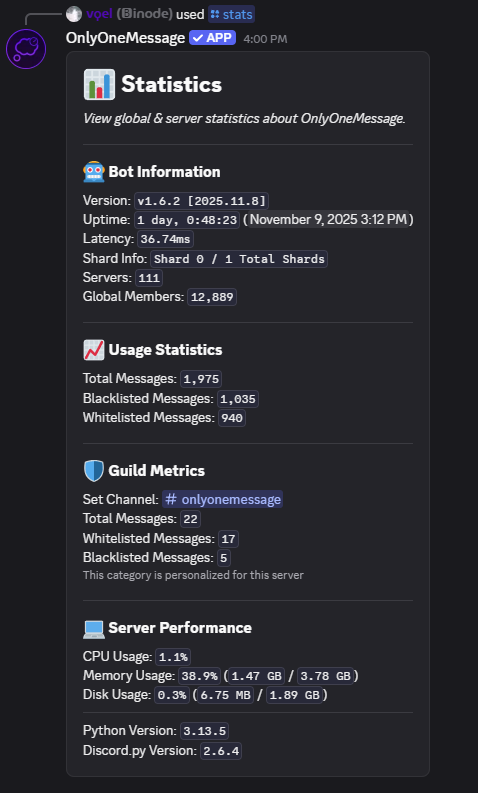

Commands
A detailed list of OnlyOneMessage's commands, what it does, its restrictions, and its parameters.
/setup
Automatically configure OnlyOneMessage for a server. This command will first prompt confirmation before proceeding.
| Parameter | Type | Description |
|---|---|---|
channel |
Text Channel | The channel where OnlyOneMessage will setup in. If not specified, the bot will create one. |
Manage Roles, Manage Channels & Manage Threads is required from both OnlyOneMessage and the executor to run this command.
/revert
Automatically reverts all configurations made by OnlyOneMessage. A confirmation message will be shown before proceeding. The set channel will also be deleted.
You can alternatively remove data by kicking OnlyOneMessage out of a server.
Manage Roles & Manage Channels is required from both OnlyOneMessage and the executor to run this command.
/config
Customize OnlyOneMessage's behavior for a server, using Discord's Components V2.
Configurations include:
- Message Recovery - Automatically removes the blacklist role from members, if they delete their message.
- Blacklist Duration - Automatically removes the blacklist role from a member after a certain time. This is a long-term solution to cooldowns.
- Logging - Setup a dedicated logging channel where all actions related to OnlyOneMessage will go to. You can also configure what type of logs get sent.
- Disable Functions - Temporaily disable OnlyOneMessage, a solution to
/revert. - Revert Settings - Restores all configurations to it's default
Manage Roles & Manage Channels is required to run this command.
/modify
Manage a members blacklist & whitelist roles.
To successfully execute this command, the following conditions must be met:
- The executor's highest role is higher than the member being modified.
- The member being modified is neither an administrator nor the server owner.
- The whitelist or blacklist role is positioned below the executor's highest role.
| Parameter | Type | Description |
|---|---|---|
member |
Members | The member to modify |
modify |
Choice | What role to modify |
Manage Roles is required to run this command.
/invite
Sends an invite link to add OnlyOneMessage to your own server.
/feedback
Opens a Discord Modal to submit feedback to the OnlyOneMessage developers.
We cannot respond to you via this method, please create a support ticket or email us at support@monobyte.studio to do so.
/stats
View basic statistics about OnlyOneMessage. This also includes individual server stats for blacklists and whitelists.
These statistics are also available under our API Reference.

The /stats command, as of 1.6.2.